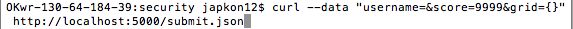
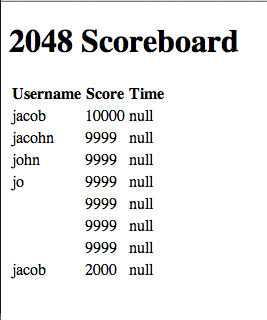
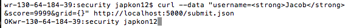
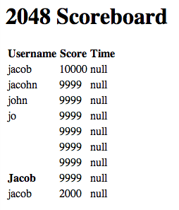

Security Analysis of 2048 Gamecenter
Introduction
A 2048 Gamecenter will be tested, and issues/vulnerabilities will be documented.
Methodology
The testing was done by first examining the app (without viewing the code), and listing things that might be useful to test. Next, I read the code for the app, and began testing with curl. At first I simply posted valid data just to see that the program worked correctly, then I tried more harmful data.
Abstract
The issues found fell into two categories: storage capacity and user input validation. There is not an unlimited amount of database storage on Heroku, so once the alloted amount is full, the app will crash because no more data can be sent to it. Input validation is very important because otherwise, a POST request could leave out important fields, or it could inject potentially malicious things into the database.
Issues Found
Fields can be left blank
- Not checking for blank user input
- Location of the issue: the submit.json request.
- Severity of Issue: Medium. The table could have completely blank data, which defeats the purpose of the table
- Description: When doing the submit.json POST request, not all fields are required. A field (or fields) can be left blank, and the data will still be sent to the server.

- Proof:

- Resolution: validate that all fields are filled in the POST request
Mongo storage limit on Heroku
- There is not an unlimited amount of storage on MongoDB through Heroku
- Location of the issue: on Heroku, and Heroku's use of Mongo
- Severity of the Issue: Low at first because 50mb of data is a lot for text, but once it is full the severity becomes high because the app will shut down
- Description: Posted data fills up space in the database, and because Heroku starts out as free, only a certain amount of space is given for each free app
- Proof: Heroku's rules
- Resolution: Either paying Heroku to get more space, or moving the servers to a local computer and increasing storage when needed
User input is not validated
- Any type of text can be sent through the POST request (including HTML or even worse, JavaScript)
- Location of the issue: on server side application (app.js)
- Severity of the Issue: High. A user can change the way the table looks, or rerout the index to a new page, or do all kinds of things with JavaScript.
- Description: the issue was found by simply trying to send HTML tags through the POST request.

- Proof:

- Resolution: validate the user input when it is posted to the server
Conclusion
Validating the user input would solve a lot of security issues. It would make sure no blank entries made it into the database, and users would not be allowed to inject JavaScript or other malicious things. This would get rid of the real security threats, but obviously would not fix the problem of storage capacity. This problem is not easily solved as it can become expensive, and on a budget of "Free" there is no real way around this issue.